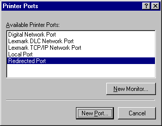

RedMon peut être utilisé avec n'importe quel programme acceptant des données sur l'entrée standard.
RedMon vous permet de créer des ports d'imprimante redirigés. Si vous reliez une imprimante de Windows au port redirigé, toutes les données envoyées au port redirigé seront expédiées par RedMon à l'entrée standard d'un programme. Ce programme se charge alors du traitement des données et de la création d'une nouvelle impression.
Une imprimante Windows PostScript redirigée vers un port RedMon peut être partagée en réseau. Si cette imprimante est configurée pour utiliser Ghostscript et une imprimante non-PostScript, elle apparaîtra sous la forme d'une imprimante PostScript pour les autres utilisateurs du réseau.
RedMon fonctionne sous Windows 95, NT 4.0 et 3.51.
La configuration de RedMon s'adresse à des utilisateurs expérimentés.
Installation
Désinstallation
Ajouter un port
Paramètres du port
Propriétés du fichier trace
Qu'est-ce que Ghostscript?
Exemple Ghostscript
Problèmes communs
Copyright
Nouvelles fonctionnalités
Pour installer RedMon sous Windows NT, vous devrez avoir les privilèges Administrateur.
Suivez l'Exemple Ghostscript pour le reste de la configuration.
Windows 95 : Après avoir ajouté un port, vous devez le configurer à l'aide de Paramètres du port et Paramètres du spouleur. Pour toute imprimante reliée à ce port, la case d'option Désactiver le support bidirectionnel pour cette imprimante de la boîte de dialogue Paramètres du spouleur doit être activée.
Windows NT : Après avoir ajouté un port, vous devez le configurer à l'aide de Configuration du port. La case à cocher Activer le support bidirectionnel support doit être désactivée.
Vous ne pouvez pas utiliser le même nom de port qu'un port existant. En particulier, vous ne pouvez pas créer de port redirigé nommé LPT1:
Pour l'Impression depuis le programme, vous pouvez choisir entre Le programme se charge de l'impression, Copier la sortie standard vers l'imprimante et Copier le fichier temporaire vers l'imprimante. Dans les deux derniers cas, vous devez spécifier une Imprimante.
Si vous sélectionnez Imprimer les erreurs, un compte-rendu d'erreurs sera imprimé.
Le programme peut être exécuté Normal, Réduit ou Caché.
Exécuter en tant qu'utilisateur n'est disponible que sous Windows NT et est en général désactivé.
Un Fichier trace peut être configuré de telle sorte qu'il reçoive les canaux de sortie et d'erreur standards. Grâce à un fichier trace, vous pouvez voir les messages d'erreur qui ont été écrits sur les canaux de sortie et d'erreur standards.
Voir l'Exemple Ghostscript et les Problèmes courants.
Le programme se charge de l'impression
Copier la sortie standard vers l'imprimante
Copier le fichier temporaire vers l'imprimante
Imprimer les erreurs
Variables d'environnement
Exécuter en tant qu'utilisateur
Délai de fermeture
Pour utiliser cette méthode, vous devez disposer d'une version de Ghostscript ultérieure à la 5.50.
Par exemple, la liste des arguments du programme peut comporter :
-sOutputFile="%1"
Cette méthode est recommandée pour l'utilisation avec Ghostscript.
Imprimer les erreurs est surtout utile lorsqu'un programme de redirection écrit un message d'erreur sur le canal de sortie standard, capturé par le fichier trace.
Imprimer les erreurs est ignoré si Le programme se charge de l'impression est sélectionné.
REDMON_PORT est le nom du port, typiquement "RPT1:".
REDMON_JOB est le numéro du travail, un entier.
REDMON_PRINTER est le nom de l'imprimante (par ex. "HP DeskJet 500").
REDMON_MACHINE est le nom de la machine qui a créé le travail (par ex. "\\Bureau").
REDMON_USER est le nom de l'utilisateur à qui appartient le travail (par ex. "JDUPONT").
REDMON_DOCNAME est le nom du travail d'impression (par ex. "Page de Test d'Impression").
TEMP et TMP sont les répertoires pour les fichiers temporaires.
Notez que sous Windows NT, le programme de redirection s'exécute dans l'environnement du compte SYSTEM. A part les variables d'environnement mentionnées ci-dessus, très peu sont définies. La clé de registre HKEY_USER et le profil d'utilisateur sont ceux de l'"Utilisateur par défaut".
"Exécuter en tant qu'utilisateur" n'est disponible que sous NT4. Ne l'utilisez pas si l'imprimante est partagée en réseau. Les utilisateurs distants ne peuvent pas exécuter de programmes sur votre ordinateur. Si un utilisateur distant essaie de soumettre un travail d'impression, l'EXE va s'interrompre sur un message du type :
L'initialisation de la dynamic link library C:\WINNT4\system32\kernel32.dll a échoué. Le process s'est terminé de façon anormale.
Le service spouler va être bloqué jusqu'à ce que vous l'arrêtiez et le relanciez. Exécuter en tant qu'utilisateur est destiné à être utilisé pour lancer un programme GUI tel que GSview localement via RedRun.
Alors que le programme va avoir les attributs de sécurité de l'utilisateur qui a soumis le travail d'impression, il va avoir l'environnement du compte SYSTEM. Les informations du profil d'utilisateur seront incorrectes.
Pour utiliser un fichier trace, vous devez activer la case à cocher Utiliser un fichier trace et indiquer un nom de fichier valide pour le fichier trace.
Si vous activez la case à cocher Débogage, RedMon écrira des messages de débogage supplémentaires dans le fichier trace. Ces messages ne sont probablement utiles qu'à l'auteur de RedMon. Si vous voulez que le fichier trace ne contienne que la sortie standard du programme de redirection, désactiver la case à cocher Débogage.
Voir l'Exemple Ghostscript.
- Un interpréteur pour le langage PostScript (TM) et le format de document portatif d'Adobe (Portable Document Format, PDF -- parfois confondu avec Acrobat, le produit d'Adobe permettant l'édition et la consultation de documents PDF), et
- un ensemble de procédures en C (la bibliothèque Ghostscript) qui implémente les capacités de graphisme et de filtrage (compression / décompression / conversion de données) qui constituent les opérations de base dans le langage PostScript et dans le PDF.
Ghostscript est disponible pour Microsoft Windows, IBM OS/2, DEC VMS et pour de nombreuses versions d'Unix à l'adresse
http://www.cs.wisc.edu/~ghost/
Ghostscript appartient à Aladdin Enterprises (tous droits réservés).
GSview est un visualisateur écrit par Ghostgum Software Pty Ltd, basé sur Ghostscript. GSview est disponible à l'adresse
http://www.cs.wisc.edu/~ghost/gsview/
Si vous souhaitez utiliser Ghostscript avec RedMon, vous devriez utiliser le programme d'installation fourni avec GSview pour installer GSview et Ghostscript.
Exemple Ghostscript pour Windows 95
Exemple Ghostscript pour Windows NT 4.0
Exemple Ghostscript avec une imprimante HP LaserJet
Pour imprimer sur une imprimante HP DeskJet 500 dont le nom de file d'attente est "HP DeskJet 500", créez tout d'abord un fichier nommé c:\gstools\djet500.rsp contenant les lignes suivantes :
-Ic:\gstools\gs5.50;c:\gstools\gs5.50\fonts -sDEVICE=djet500 -dNOPAUSE -dSAFER -sPAPERSIZE=a4
Voir les fichiers Use.htm et Install.htm fournis avec Ghostscript pour une explication de ces options.
Visualisez les propriétés d'une imprimante existante, sélectionnez l'onglet Détails puis cliquez sur le bouton Ajouter un port.... Dans la boîte de dialogue Ajout d'un port qui apparaît alors, activez la case d'option Autre, sélectionnez Port redirigé puis OK.
La boîte de dialogue Ajout d'un port redirigé de RedMon apparaît. Acceptez ce qui est proposé par défaut.
En utilisant l'assistant Ajout d'imprimante, créez une nouvelle icône pour une imprimante PostScript. Un modèle approprié est l'imprimante Apple LaserWriter II NT.
Visualisez les propriétés de cette nouvelle imprimante PostScript, sélectionnez l'onglet Détails puis sélectionnez dans la liste Imprimer vers le port RedMon que vous avez créé, probablement RPT1:
Cliquez sur le bouton Paramètres du port. La boîte de dialogue Propriétés de RPT1: apparaît.
Entrez comme nom du programme
c:\gstools\gs5.50\gswin32c.exe
et comme arguments
@c:\gstools\djet500.rsp -sOutputFile="%1" -
N'omettez pas l'espace et le tiret à la fin de la ligne. Si vous oubliez de faire ceci, il pourra arriver que Ghostscript bloque la file d'attente de l'imprimante. Réglez l'impression sur Copier le fichier temporaire vers l'imprimante et choisissez l'imprimante HP DeskJet 500.
Si vous voulez savoir ce qui est écrit sur la sortie standard (i.e. si vous souhaitez voir d'éventuels messages d'erreur), cliquez sur le bouton Fichier trace.
Cliquez sur le bouton OK dans les boîtes de dialogue Propriétés du fichier trace RPT1: et Propriétés de RPT1:.
A partir des propriétés de cette imprimante PostScript, sélectionnez l'onglet Détails puis cliquez sur le bouton Paramètres du spouleur. Choisissez RAW comme Format de données. Activez la case d'option Désactiver le support bidirectionnel pour cette imprimante. Ce dernier changement est le plus important.
A partir des propriétés de cette imprimante PostScript, sélectionnez l'onglet PostScript. Dans la zone En-tête PostScript, assurez-vous que la case d'option Télécharger l'en-tête à chaque impression est bien activée. Cliquez sur le bouton Avancées pour afficher les Options PostScript avancées. Dans la zone Format des données, assurez-vous que la case d'option Données ASCII est bien activée. Désactivez les cases à cocher Envoyer CTRL+D avant le travail et Envoyer CTRL+D après le travail.
Les travaux d'impressions destinés à cette imprimante Apple LaserWriter II NT seront maintenant effectuées en utilisant Ghostscript. Si vous partagez cette imprimante en réseau, elle apparaîtra sous la forme d'une imprimante PostScript pour les autres utilisateurs du réseau.
Pour obtenir une liste des modèles d'imprimantes Ghostscript disponibles, placez-vous dans le répertoire de Ghostscript (c:\gstools\gs5.50) et exécutez
gswin32c -h
Si votre imprimante ne figure pas dans la liste, consultez la page
http://www.cs.wisc.edu/~ghost/printer.html
pour voir si l'un des modèles d'imprimantes Ghostscript existants fonctionnera avec votre imprimante.
Pour imprimer sur une imprimante HP DeskJet 500 dont le nom de file d'attente est "HP DeskJet 500", créez tout d'abord un fichier nommé c:\gstools\djet500.rsp contenant les lignes suivantes :
-Ic:\gstools\gs5.50;c:\gstools\gs5.50\fonts -sDEVICE=djet500 -dNOPAUSE -dSAFER -sPAPERSIZE=a4
Voir les fichiers Use.htm et Install.htm fournis avec Ghostscript pour une explication de ces options.
Lancez l'assistant Ajout d'imprimante. Sur la deuxième page, sélectionnez Ajouter un port.

Sélectionnez Port redirigé puis cliquez sur le bouton Nouveau port. La boîte de dialogue Ajout d'un port redirigé de RedMon apparaît. Acceptez ce qui est proposé par défaut.
Cliquez sur Fermer puis sur Configurer le port. La boîte de dialogue Propriétés de RPT1: apparaît.
Entrez comme nom du programme
c:\gstools\gs5.50\gswin32c.exe
et comme arguments
@c:\gstools\djet500.rsp -sOutputFile="%1" -
N'omettez pas l'espace et le tiret à la fin de la ligne. Si vous oubliez de faire ceci, il pourra arriver que Ghostscript bloque la file d'attente de l'imprimante. Réglez l'impression sur Copier le fichier temporaire vers l'imprimante et choisissez l'imprimante HP DeskJet 500.
Si vous voulez savoir ce qui est écrit sur la sortie standard (i.e. si vous souhaitez voir d'éventuels messages d'erreur), cliquez sur le bouton Fichier trace.
Cliquez sur le bouton OK dans les boîtes de dialogue Propriétés du fichier trace RPT1: et Propriétés de RPT1:.
Dans la boîte de dialogue de l'assistant Ajout d'imprimante répertoriant les constructeurs et les types d'imprimantes, sélectionnez l'imprimante Apple LaserWriter II NT v47.0.
Les travaux d'impressions destinés à cette imprimante Apple LaserWriter II NT seront maintenant effectuées en utilisant Ghostscript. Si vous partagez cette imprimante en réseau, elle apparaîtra sous la forme d'une imprimante PostScript pour les autres utilisateurs du réseau.
Pour obtenir une liste des modèles d'imprimantes Ghostscript disponibles, placez-vous dans le répertoire de Ghostscript (c:\gstools\gs5.50) et exécutez
gswin32c -h
Si votre imprimante ne figure pas dans la liste, consultez la page
http://www.cs.wisc.edu/~ghost/printer.html
pour voir si l'un des modèles d'imprimantes Ghostscript existants fonctionnera avec votre imprimante.
Si vous souhaitez configurer le port redirigé ultérieurement, dans les propriétés de l'imprimante, sélectionnez l'onglet Ports et configurez Configurer les ports. Pour utiliser RedMon, il est nécessaire que le support bidirectionnel soit désactivé, mais il s'avère qu'il ne peut pas être activé.
-Ic:\gstools\gs5.50;c:\gstools\gs5.50\fonts -sDEVICE=ljet4 -r300 -dNOPAUSE -dSAFER -sPAPERSIZE=a4
La commande Ghostscript serait
c:\gstools\gs5.50\gswin32c.exe
et les arguments
@c:\gstools\ljet4l.rsp -sOutputFile="%1" -
N'omettez pas l'espace et le tiret à la fin de la ligne. Si vous oubliez de faire ceci, il pourra arriver que Ghostscript bloque la file d'attente de l'imprimante. L'impression serait :
Copier le fichier temporaire vers l'imprimante
et l'imprimante :
HP LaserJet 4L
Tous les autres paramètres devraient être identiques à ceux de l'exemple précédent.
Problème : En essayant d'imprimer, une boîte de dialogue intitulée Dossier Imprimantes apparaît et affiche le message Il y a eu un problème d'impression sur RPT1: pour l'imprimante (Apple LaserWriter II NT) : Le système ne peut pas écrire vers le périphérique spécifié.
RedMon n'a pas pu lancer le programme que vous avez spécifié. Regardez dans le fichier trace pour plus de détails.
Problème : Ghostscript se bloque.
Il est possible que vous ayez oublié d'ajouter un espace et un tiret à la fin de la ligne contenant les arguments de Ghostscript. Ceci est nécessaire pour que Ghostscript puisse lire l'entrée standard.
Problème : Certains travaux d'impression sont effectués par Ghostscript, d'autres non. Si vous imprimez vers le port FILE:, Ghostscript est capable d'effectuer ces travaux.
Assurez-vous que dans la boîte de dialogue Paramètres du spouleur, la case d'option Désactiver le support bidirectionnel pour cette imprimante est bien activée. Si c'est bien le problème, le fichier trace lorsque vous avez choisi d'inclure les informations de débogage contiendra le message
REDMON ReadPort: Vous devez désactiver le support bidirectionnel pour cette imprimante.
Copyright (C) 1997-1998, Ghostgum Software Pty Ltd. Tous droits réservés. Copyright (C) 1998 pour la traduction française, Cyrille Chevallet.
Ce fichier fait partie de RedMon.
Ce programme est distribué SANS AUCUNE GARANTIE. Les auteurs et distributeurs n'assument aucune responsabilité pour les conséquences résultant de son utilisation et n'assurent pas qu'il remplit une fonction particulière ou simplement fonctionne, à moins qu'ils ou elles ne le précisent par écrit. Voir la RedMon Free Public Licence (la 'Licence') pour plus d'informations.
Chaque copie de RedMon doit contenir une copie de la Licence, classiquement sous la forme d'un fichier ASCII nommé LICENCE. La Licence vous donne le droit de copier, modifier et redistribuer RedMon, mais uniquement sous certaines conditions décrites dans la Licence. Entre autres, la Licence exige que les informations de copyright et cette note soient présentes sur toutes les copies.
Auteur : Russell Lang, Ghostgum Software Pty Ltd
Internet : http://www.cs.wisc.edu/~ghost/rjl.html
Vous pouvez exécuter un programme qui écrit sur le canal de sortie standard et indiquer à RedMon qu'il doit imprimer la sortie standard. Ceci ne fonctionne pas avec les versions actuelles de Ghostscript parce que vous ne pouvez pas empêcher simplement Ghostscript d'écrire vers le stream %stdout PostScript. Voir la rubrique d'aide Copier la sortie standard vers l'imprimante.
2. Exécuter en tant qu'utilisateur peut être utilisé pour exécuter une application en tant que l'utilisateur local qui a soumis le travail d'impression.
3. Certaines Variables d'environnement sont définies par RedMon pour permettre au programme de trouver qui a soumis le travail d'impression.